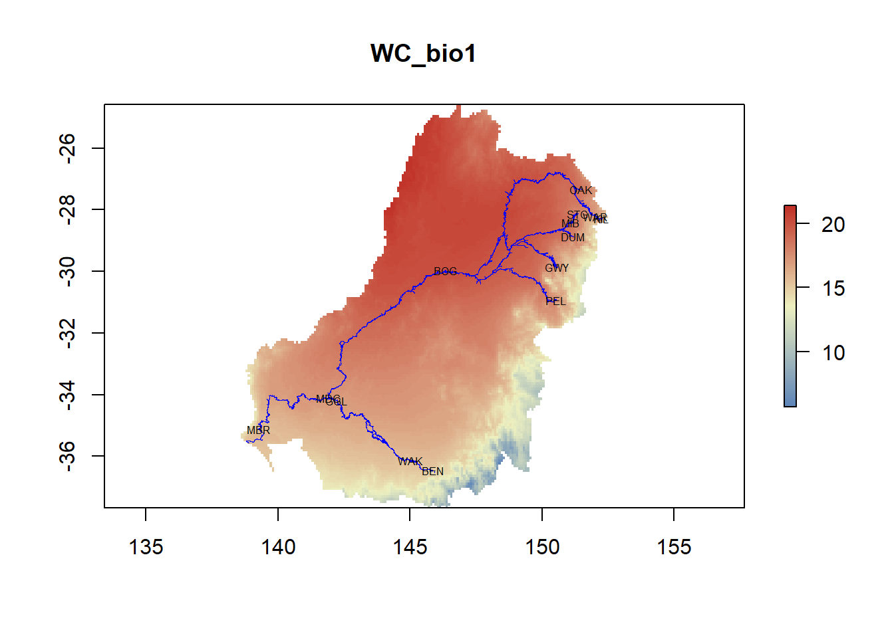
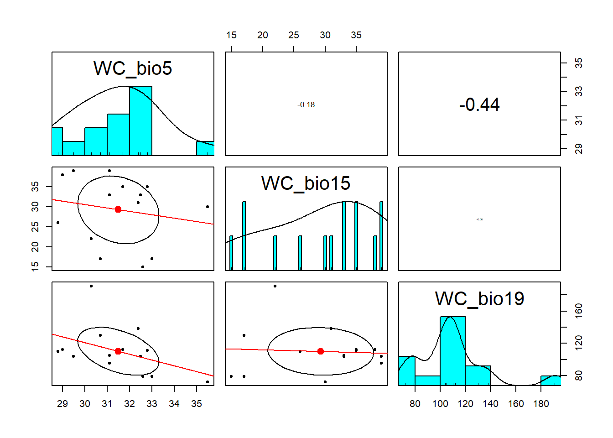
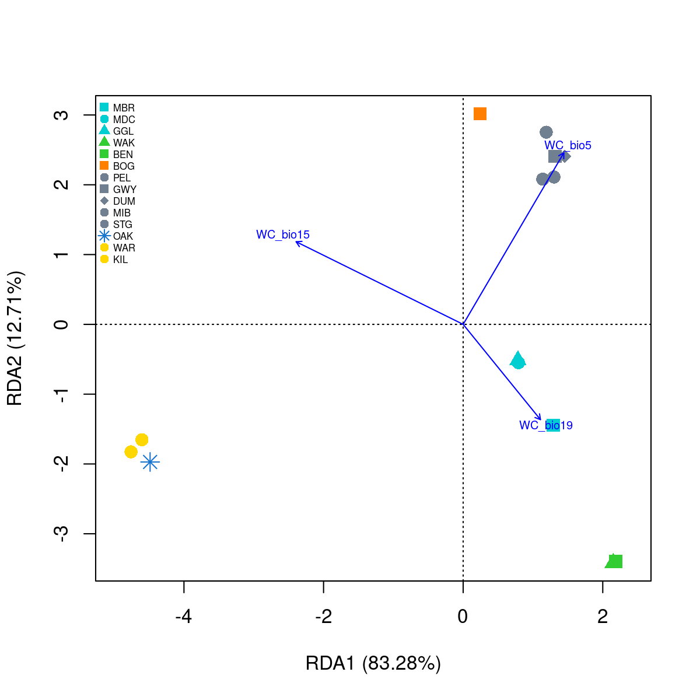
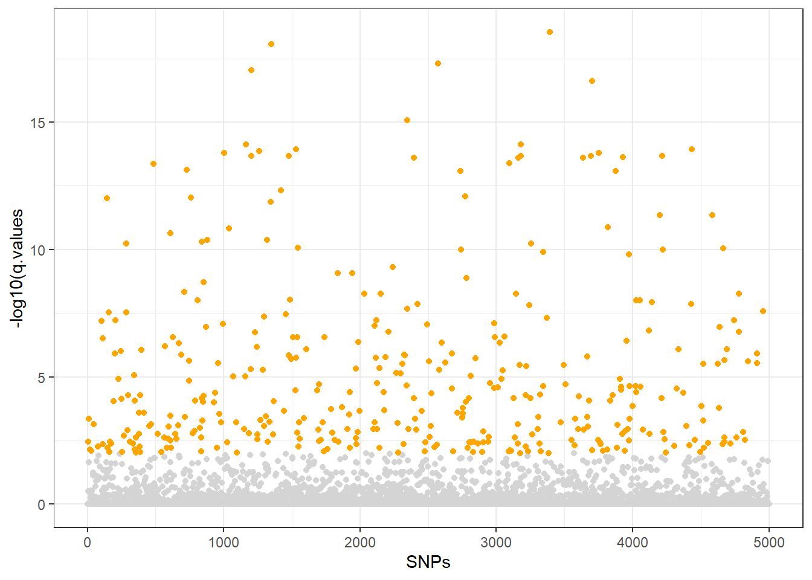
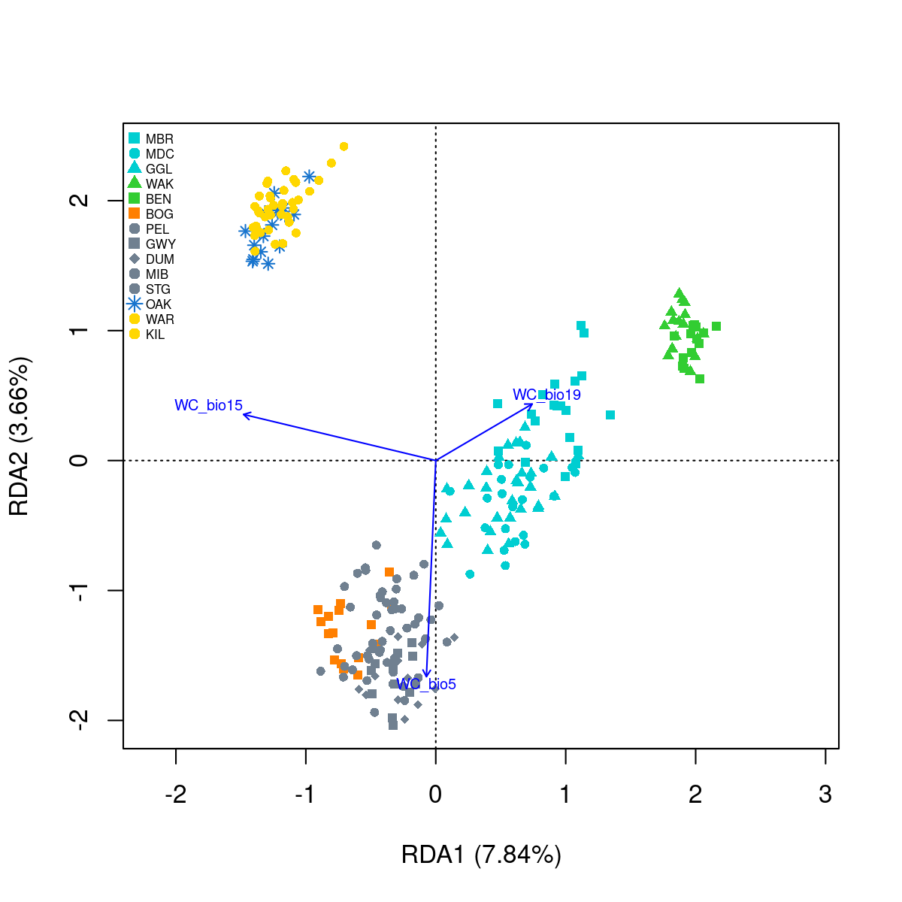
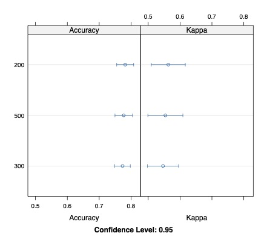
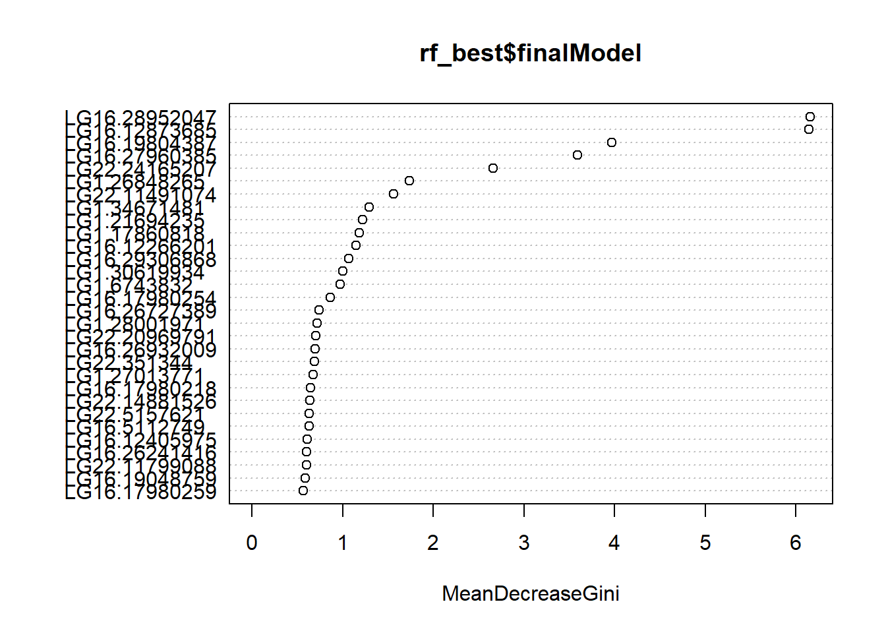
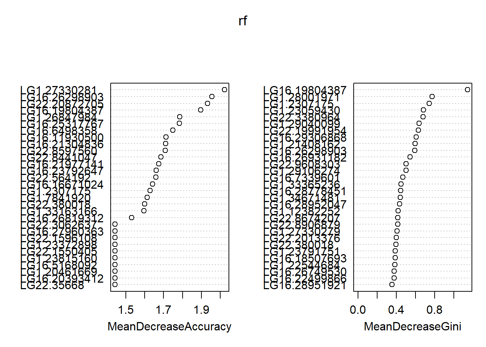
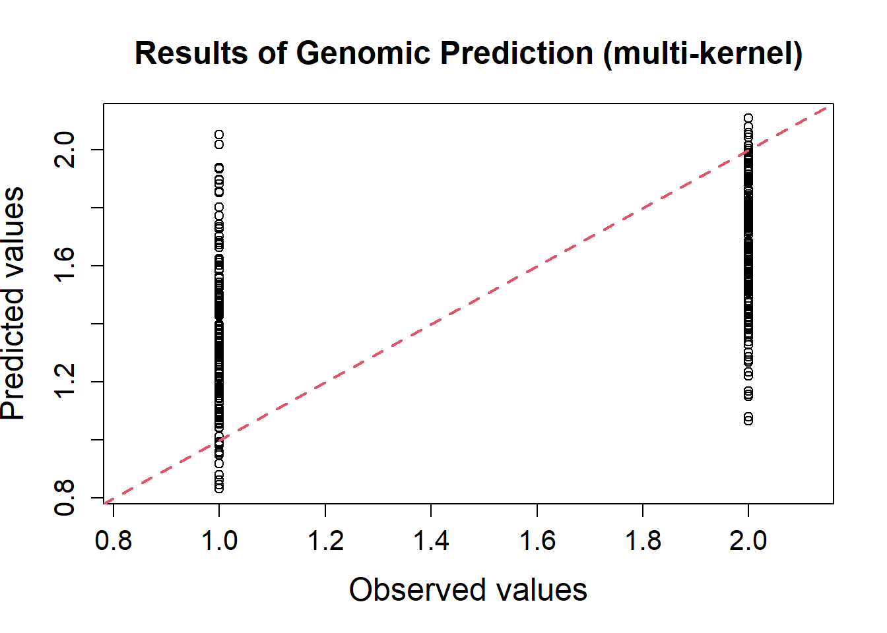

#devtools::install_github("pygmyperch/melfuR")
#BiocManager::install('qvalue')
library(adegenet)
library(LEA)
library(vegan)
library(fmsb)
library(psych)
library(dartRverse)
library(melfuR)
library(sdmpredictors)
library(sf)
library(raster)
library(robust)
library(qvalue)
library(mlbench)
library(caret)
library(RAINBOWR)
library(qqman)
library(randomForest)7 Natural Selection
Session Presenters
Required packages
make sure you have the packages installed, see Install dartRverse
GEA analysis of SNP and environmental data using RDA
First lets load in some functions we will be using.
source("utils.R")1. Data preparation
# load genlight object
load("data/Mf5000_gl.RData")
Mf5000_gl /// GENLIGHT OBJECT /////////
// 249 genotypes, 5,000 binary SNPs, size: 1.1 Mb
12917 (1.04 %) missing data
// Basic content
@gen: list of 249 SNPbin
@ploidy: ploidy of each individual (range: 2-2)
// Optional content
@ind.names: 249 individual labels
@loc.names: 5000 locus labels
@pop: population of each individual (group size range: 9-30)
@other: a list containing: X Mf5000_gl@pop [1] MBR MBR MBR MBR MBR MBR MBR MBR MBR MBR MBR MBR MBR MBR MBR MBR MBR MBR
[19] MBR MBR MDC MDC MDC MDC MDC MDC MDC MDC MDC MDC MDC MDC MDC MDC MDC MDC
[37] MDC MDC MDC MDC MDC MDC GGL GGL GGL GGL GGL GGL GGL GGL GGL GGL GGL GGL
[55] GGL GGL GGL GGL GGL GGL GGL GGL GGL GGL GGL GGL GGL GGL GGL GGL GGL GGL
[73] WAK WAK WAK WAK WAK WAK WAK WAK WAK WAK WAK WAK WAK WAK WAK WAK BEN BEN
[91] BEN BEN BEN BEN BEN BEN BEN BEN BEN BEN BEN BEN BOG BOG BOG BOG BOG BOG
[109] BOG BOG BOG BOG BOG BOG BOG BOG BOG BOG PEL PEL PEL PEL PEL PEL PEL PEL
[127] PEL GWY GWY GWY GWY GWY GWY GWY GWY GWY GWY GWY GWY DUM DUM DUM DUM DUM
[145] DUM DUM DUM DUM DUM DUM DUM DUM DUM MIB MIB MIB MIB MIB MIB MIB MIB MIB
[163] MIB MIB MIB MIB MIB MIB MIB MIB MIB MIB MIB STG STG STG STG STG STG STG
[181] STG STG STG STG STG STG STG STG STG STG STG STG STG OAK OAK OAK OAK OAK
[199] OAK OAK OAK OAK OAK OAK OAK OAK OAK OAK OAK OAK OAK WAR WAR WAR WAR WAR
[217] WAR WAR WAR WAR WAR WAR WAR WAR WAR WAR WAR WAR WAR WAR WAR KIL KIL KIL
[235] KIL KIL KIL KIL KIL KIL KIL KIL KIL KIL KIL KIL KIL KIL KIL
Levels: BEN BOG DUM GGL GWY KIL MBR MDC MIB OAK PEL STG WAK WAR## What do you notice about the factor levels?
# Factors in R can make you question your life choices like nothing else...
# re-order the pop levels to match the order of individuals in your data
Mf5000_gl@pop <- factor(Mf5000_gl@pop, levels = as.character(unique(Mf5000_gl@pop)))
Mf5000_gl@pop [1] MBR MBR MBR MBR MBR MBR MBR MBR MBR MBR MBR MBR MBR MBR MBR MBR MBR MBR
[19] MBR MBR MDC MDC MDC MDC MDC MDC MDC MDC MDC MDC MDC MDC MDC MDC MDC MDC
[37] MDC MDC MDC MDC MDC MDC GGL GGL GGL GGL GGL GGL GGL GGL GGL GGL GGL GGL
[55] GGL GGL GGL GGL GGL GGL GGL GGL GGL GGL GGL GGL GGL GGL GGL GGL GGL GGL
[73] WAK WAK WAK WAK WAK WAK WAK WAK WAK WAK WAK WAK WAK WAK WAK WAK BEN BEN
[91] BEN BEN BEN BEN BEN BEN BEN BEN BEN BEN BEN BEN BOG BOG BOG BOG BOG BOG
[109] BOG BOG BOG BOG BOG BOG BOG BOG BOG BOG PEL PEL PEL PEL PEL PEL PEL PEL
[127] PEL GWY GWY GWY GWY GWY GWY GWY GWY GWY GWY GWY GWY DUM DUM DUM DUM DUM
[145] DUM DUM DUM DUM DUM DUM DUM DUM DUM MIB MIB MIB MIB MIB MIB MIB MIB MIB
[163] MIB MIB MIB MIB MIB MIB MIB MIB MIB MIB MIB STG STG STG STG STG STG STG
[181] STG STG STG STG STG STG STG STG STG STG STG STG STG OAK OAK OAK OAK OAK
[199] OAK OAK OAK OAK OAK OAK OAK OAK OAK OAK OAK OAK OAK WAR WAR WAR WAR WAR
[217] WAR WAR WAR WAR WAR WAR WAR WAR WAR WAR WAR WAR WAR WAR WAR KIL KIL KIL
[235] KIL KIL KIL KIL KIL KIL KIL KIL KIL KIL KIL KIL KIL KIL KIL
Levels: MBR MDC GGL WAK BEN BOG PEL GWY DUM MIB STG OAK WAR KIL# convert to genind
Mf5000.genind <- gl2gi(Mf5000_gl)Starting gl2gi
Processing genlight object with SNP data
Matrix converted.. Prepare genind object...
Completed: gl2gi Mf5000.genind/// GENIND OBJECT /////////
// 249 individuals; 5,000 loci; 10,000 alleles; size: 12.2 Mb
// Basic content
@tab: 249 x 10000 matrix of allele counts
@loc.n.all: number of alleles per locus (range: 2-2)
@loc.fac: locus factor for the 10000 columns of @tab
@all.names: list of allele names for each locus
@ploidy: ploidy of each individual (range: 2-2)
@type: codom
@call: df2genind(X = xx[, ], sep = "/", ncode = 1, ind.names = x@ind.names,
pop = x@pop, NA.char = "-", ploidy = 2)
// Optional content
@pop: population of each individual (group size range: 9-30)
@other: a list containing: X # Ok we have our genotypes
Decision time:
Ordination analyses cannot handle missing data…
How can we impute missing data?
remove loci with missing data?
remove individuals with missing data?
impute missing data, ok how?
most common genotype across all data?
most common genotype per site/population/other?
based on population allele frequencies characterised using snmf (admixture)?
# ADMIXTURE results most likely 6 pops
imputed.gi <- melfuR::impute.data(Mf5000.genind, K = 6 )Total missing data = 1.04 %
The project is saved into :
dat.snmfProject
To load the project, use:
project = load.snmfProject("dat.snmfProject")
To remove the project, use:
remove.snmfProject("dat.snmfProject")
[1] 42
[1] "*************************************"
[1] "* create.dataset *"
[1] "*************************************"
summary of the options:
[...]
Missing genotype imputation for K = 6
Missing genotype imputation for run = 3
Results are written in the file: ./dat.lfmm_imputed.lfmm
Total missing data was = 1.04 %
Total missing data now = 0 %# re-order each genotype as major/minor allele
# (generally no real reason to do this... but it's neat and might be useful for something)
imputed.sorted.gi <- sort_alleles(imputed.gi)
# check results
imputed.gi@tab[1:10,1:6] SNP_1.C SNP_1.G SNP_2.A SNP_2.T SNP_3.T SNP_3.A
MBR_10 1 1 1 1 2 0
MBR_11 1 1 1 1 2 0
MBR_12 1 1 2 0 2 0
MBR_14 0 2 2 0 2 0
MBR_15 0 2 1 1 2 0
MBR_16 0 2 2 0 2 0
MBR_17 0 2 0 2 2 0
MBR_18 0 2 1 1 2 0
MBR_19 1 1 2 0 2 0
MBR_1 0 2 1 1 2 0imputed.sorted.gi@tab[1:10,1:6] SNP_1.G SNP_1.C SNP_2.A SNP_2.T SNP_3.T SNP_3.A
MBR_10 1 1 1 1 2 0
MBR_11 1 1 1 1 2 0
MBR_12 1 1 2 0 2 0
MBR_14 2 0 2 0 2 0
MBR_15 2 0 1 1 2 0
MBR_16 2 0 2 0 2 0
MBR_17 2 0 0 2 2 0
MBR_18 2 0 1 1 2 0
MBR_19 1 1 2 0 2 0
MBR_1 2 0 1 1 2 0# The allele counts for SNP_1 were ordered C/T before sorting, now they are T/C
# the sort_alleles function also has an optional 'pops' argument where you can specify
# a population to use as the reference if you want to analyse relative to some focal pop
unlink(c('dat.geno', 'dat.lfmm', 'dat.snmfProject', 'dat.snmf', 'dat.lfmm_imputed.lfmm',
'individual_env_data.csv'), recursive = T)The sort_alleles function also has an optional ‘pops’ argument where you can specify a population to use as the reference if you want to analyse relative to some focal pop.
Format SNP data for ordination analysis in vegan
So we have our genotypes and have filled in the missing data. We now need to format the data for use in the RDA. We can do the analysis at an individual level using a matrix of allele counts per locus, or at a population level using population allele frequencies. Both of those options are easy to format from a genind object.
Individual-based
# for individual based analyses
# get allele counts
alleles <- imputed.sorted.gi@tab
# get genotypes (counts of reference allele) and clean up locus names
snps <- alleles[,seq(1,ncol(alleles),2)]
colnames(snps) <- locNames(imputed.sorted.gi)
snps[1:10,1:10] SNP_1 SNP_2 SNP_3 SNP_4 SNP_5 SNP_6 SNP_7 SNP_8 SNP_9 SNP_10
MBR_10 1 1 2 2 2 2 1 1 2 1
MBR_11 1 1 2 2 2 2 2 2 2 0
MBR_12 1 2 2 2 2 1 2 2 2 1
MBR_14 2 2 2 2 2 2 1 1 2 2
MBR_15 2 1 2 2 2 2 1 1 2 2
MBR_16 2 2 2 2 2 2 2 2 2 2
MBR_17 2 0 2 2 2 2 0 2 2 2
MBR_18 2 1 2 2 2 1 1 2 2 0
MBR_19 1 2 2 2 2 1 2 2 2 2
MBR_1 2 1 2 2 1 2 2 2 2 2# Alternative: impute missing data with most common genotype across all data
# alleles <- Mf5000.genind@tab
# snps <- alleles[,seq(1,ncol(alleles),2)]
# colnames(snps) <- locNames(Mf5000.genind)
# snps <- apply(snps, 2, function(x) replace(x, is.na(x), as.numeric(names(which.max(table(x))))))
# check total % missing data
# (sum(is.na(snps)))/(dim(snps)[1]*dim(snps)[2])*100Population-based
# for population based analyses
# get pop allele frequencies
gp <- genind2genpop(imputed.sorted.gi)
Converting data from a genind to a genpop object...
...done.AF <- makefreq(gp)
Finding allelic frequencies from a genpop object...
...done.# drop one (redundant) allele per locus
AF <- AF[,seq(1,ncol(AF),2)]
colnames(AF) <- locNames(gp)
rownames(AF) <- levels(imputed.sorted.gi@pop)
AF[1:14,1:6] SNP_1 SNP_2 SNP_3 SNP_4 SNP_5 SNP_6
MBR 0.87500000 0.8250000 0.9750000 1.0000000 0.9750000 0.8250000
MDC 0.70454545 0.7045455 0.8409091 0.9545455 0.8863636 0.8181818
GGL 0.71666667 0.7833333 0.9000000 0.9166667 0.8500000 0.8000000
WAK 0.93750000 1.0000000 1.0000000 1.0000000 1.0000000 0.3125000
BEN 0.92857143 1.0000000 1.0000000 1.0000000 1.0000000 0.6071429
BOG 0.75000000 0.8125000 0.7812500 1.0000000 0.7812500 0.9062500
PEL 0.83333333 0.7222222 0.9444444 0.9444444 0.8888889 1.0000000
GWY 0.75000000 0.9166667 1.0000000 1.0000000 1.0000000 0.8333333
DUM 0.82142857 1.0000000 0.9285714 0.9285714 1.0000000 0.8571429
MIB 0.92500000 0.7750000 0.9250000 0.8250000 0.9750000 0.8500000
STG 0.97500000 0.8750000 0.6500000 0.8000000 1.0000000 0.8000000
OAK 0.02777778 0.6388889 0.6388889 0.6666667 0.3333333 1.0000000
WAR 0.20000000 0.9000000 0.7000000 0.5750000 0.2750000 1.0000000
KIL 0.25000000 0.7777778 0.5277778 0.7222222 0.3055556 1.0000000Get environmental data
Ok our SNP data are formatted and ready to go Now we need some environmental data…
Decision time:
What are the variables you want to use? Considerations: Prior/expert knowledge, existing hypotheses, species distribution models (SDMs), most important variables Data availability? Think about surrogates/proxies if specific data not available, raw variables, PCA, other transformations?
In this case we are going to keep it simple and just use a few WorldClim variables Bio01 (annual mean temperature), Bio05 (temperature in hottest month), Bio15 (rainfall seasonality) and Bio19 (rainfall in coldest quarter)
# set the data directory and extend the response timeout (sometimes the database can be slow to respond)
options(sdmpredictors_datadir="data/spatial_data")
options(timeout = max(300, getOption("timeout")))
# Explore environmental layers
sdmpredictors::list_layers("WorldClim") dataset_code layer_code name
1 WorldClim WC_alt Altitude
2 WorldClim WC_bio1 Annual mean temperature
3 WorldClim WC_bio2 Mean diurnal temperature range
4 WorldClim WC_bio3 Isothermality
5 WorldClim WC_bio4 Temperature seasonality
6 WorldClim WC_bio5 Maximum temperature
7 WorldClim WC_bio6 Minimum temperature
8 WorldClim WC_bio7 Annual temperature range
9 WorldClim WC_bio8 Mean temperature of wettest quarter
10 WorldClim WC_bio9 Mean temperature of driest quarter
11 WorldClim WC_bio10 Mean temperature of warmest quarter
12 WorldClim WC_bio11 Mean temperature of coldest quarter
13 WorldClim WC_bio12 Annual precipitation
14 WorldClim WC_bio13 Precipitation of wettest month
15 WorldClim WC_bio14 Precipitation of driest month
16 WorldClim WC_bio15 Precipitation seasonality
17 WorldClim WC_bio16 Precipitation of wettest quarter
18 WorldClim WC_bio17 Precipitation of driest quarter
19 WorldClim WC_bio18 Precipitation of warmest quarter
[...]# Explore environmental layers
layers <- as.data.frame(sdmpredictors::list_layers("WorldClim"))
write.csv(layers, "./data/WorldClim.csv")
# Download specific layers to the datadir
# Bio01 (annual mean temperature), Bio05 (temperature in hottest month), Bio15 (rainfall seasonality) and Bio19 (rainfall in coldest quarter)
WC <- load_layers(c("WC_bio1", "WC_bio5", "WC_bio15", "WC_bio19"))
plot(WC)
# Crop rasters to study area and align CRS
# get Murray-Darling Basin polygon
mdb <- st_read("data/spatial_data/MDB_polygon/MDB.shp")Reading layer `MDB' from data source
`C:\repositories\dartR_workshop\kioloa\data\spatial_data\MDB_polygon\MDB.shp'
using driver `ESRI Shapefile'
Simple feature collection with 1 feature and 18 fields
Geometry type: MULTIPOLYGON
Dimension: XY
Bounding box: xmin: 138.57 ymin: -37.68 xmax: 152.49 ymax: -24.585
Geodetic CRS: GDA94# set CRS
mdb <- st_transform(mdb, 4326)
# convert to sf format
mdb <- as(mdb, "Spatial")
# crop WorldClim rasters to MDB extent, then mask pixels outside of the MDB
ENV <- crop(WC, extent(mdb))
ENV <- mask(ENV, mdb)
# get sampling sites, format as sf
sites <- read.csv("data/Mf_xy.csv", header = TRUE)
sites_sf <- st_as_sf(sites, coords = c("X", "Y"), crs = 4326)
# Generate a nice color ramp and plot the rasters
my.colors = colorRampPalette(c("#5E85B8","#EDF0C0","#C13127"))
# include other spatial data that you might want to show
rivers <- st_read("data/spatial_data/Mf_streams/Mf_streams.shp")Reading layer `Mf_streams' from data source
`C:\repositories\dartR_workshop\kioloa\data\spatial_data\Mf_streams\Mf_streams.shp'
using driver `ESRI Shapefile'
Simple feature collection with 2826 features and 31 fields
Geometry type: LINESTRING
Dimension: XY
Bounding box: xmin: 138.7888 ymin: -36.52625 xmax: 152.2712 ymax: -26.75375
Geodetic CRS: GDA94rivers <- st_transform(rivers, 4326)
rivers <- as(rivers, "Spatial")
# plot a layer
plot(ENV$WC_bio1, col=my.colors(100), main=names(ENV$WC_bio1))
lines(rivers, col="blue", lwd=0.3)
text(st_coordinates(sites_sf)[,1], st_coordinates(sites_sf)[,2], labels=sites_sf$site, cex=0.5)
Save PDF
# format nicely and export as pdf
{pdf("./images/env_rasters.pdf")
for(i in 1:nlayers(ENV)) {
rasterLayer <- ENV[[i]]
# skew the colour ramp to improve visualisation (not necessary, but nice for data like this)
p95 <- quantile(values(rasterLayer), probs = 0.05, na.rm = TRUE)
breaks <- c(minValue(rasterLayer), seq(p95, maxValue(rasterLayer), length.out = 50))
breaks <- unique(c(seq(minValue(rasterLayer), p95, length.out = 10), breaks))
color.palette <- my.colors(length(breaks) - 1)
layerColors <- if(i < 4) color.palette else rev(color.palette)
# tidy up the values displayed in the legend
simplifiedBreaks <- c(min(breaks), quantile(breaks, probs = c(0.25, 0.5, 0.75)), max(breaks))
# plot the rasters
plot(rasterLayer, breaks=breaks, col=layerColors, main=names(rasterLayer),
axis.args=list(at=simplifiedBreaks, labels=as.character(round(simplifiedBreaks))),
legend.args=list(text='', side=3, line=2, at=simplifiedBreaks))
lines(rivers, col="blue", lwd=0.3, labels(rivers$Name))
text(st_coordinates(sites_sf)[,1], st_coordinates(sites_sf)[,2], labels=sites_sf$site, cex=0.5)
}
dev.off()}Extract site environmental data
# and finally extract the environmental data for your sample sites
env.site <- data.frame(site = sites_sf$site,
X = st_coordinates(sites_sf)[,1],
Y = st_coordinates(sites_sf)[,2],
omegaX = sites_sf$omegaX,
omegaY = sites_sf$omegaY)
env.dat <- as.data.frame(raster::extract(ENV,st_coordinates(sites_sf)))
env.site <- cbind(env.site, env.dat)Have a look at the env.site data frame This is where we will keep all of the metadata for use in the analyses Keep an eye out, we are going to add a few more columns to it and eventually munge it into individual-level metadata
# let's also just do a sanity check to make sure the genomic and environmental data are in the same order
stopifnot(all(env.site$site == rownames(AF)))PCA
# to get a feel for the data we can run quick PCA using the rda function in vegan
pc <- rda(AF)
plot(pc)
Ok, not really that impressive… let’s set some plotting variables to make it easier to interpret
# set colours, markers and labels for plotting and add to env.site df
env.site$cols <- c('darkturquoise', 'darkturquoise', 'darkturquoise', 'limegreen', 'limegreen', 'darkorange1', 'slategrey', 'slategrey', 'slategrey',
'slategrey', 'slategrey', 'dodgerblue3', 'gold', 'gold')
env.site$pch <- c(15, 16, 17, 17, 15, 15, 16, 15, 18, 16, 16, 8, 16, 16)
# generate labels for each axis
x.lab <- paste0("PC1 (", paste(round((pc$CA$eig[1]/pc$tot.chi*100),2)),"%)")
y.lab <- paste0("PC2 (", paste(round((pc$CA$eig[2]/pc$tot.chi*100),2)),"%)")Plot PCA
# plot PCA
{pdf(file = "./images/Mf_PCA.pdf", height = 6, width = 6)
pcaplot <- plot(pc, choices = c(1, 2), type = "n", xlab=x.lab, ylab=y.lab, cex.lab=1)
with(env.site, points(pc, display = "sites", col = env.site$cols, pch = env.site$pch, cex=1.5, bg = env.site$cols))
legend("topleft", legend = env.site$site, col=env.site$cols, pch=env.site$pch, pt.cex=1, cex=0.50, xpd=1, box.lty = 0, bg= "transparent")
dev.off()
} ## 2. Variable filtering
## 2. Variable filtering
# extract predictor variables to matrix
env_var <- env.site[ , c("WC_bio1", "WC_bio5", "WC_bio15", "WC_bio19")]
# check for obvious correlations between variables
pairs.panels(env_var, scale=T, lm = TRUE)
## reduce variance associated with covarying variables using variance inflation factor analyses
# run procedure to remove variables with the highest VIF one at a time until all remaining variables are below your threshold
keep.env <-vif_func(in_frame=env_var,thresh=2,trace=T) var vif
WC_bio1 21.5371434397055
WC_bio5 10.4639698247348
WC_bio15 7.69781293748316
WC_bio19 3.97039440920372
removed: WC_bio1 21.53714 keep.env # the retained environmental variables[1] "WC_bio5" "WC_bio15" "WC_bio19"reduced.env <- subset(as.data.frame(env_var), select=c(keep.env))
scaled.env <- as.data.frame(scale(reduced.env))
# lets have another look
pairs.panels(reduced.env, scale=T, lm = TRUE)
3. Run analysis
So we have formatted genotypes, environmental data
What about controlling for spatial population structure in the model?
Decision time:
Do I need to control for spatial structure?
No? Great!
Yes? How do I do that?
- simple xy coordinates (or some transformation, MDS, polynomial…)
- Principal Coordinates of Neighbourhood Matrix (PCNM; R package vegan)
- Moran’s Eigenvector Maps (R package memgene)
- Fst, admixture Q values
- population allele frequency covariance matrix (BayPass omega)
We are going to use the scaled allelic covariance (Ω) estimated by BayPass to control for spatial structure in the data, see BayPass and Gates et al. 2023
# format spatial coordinates as matrix
xy <- as.matrix(cbind(env.site$omegaX, env.site$omegaY))
# reduced RDA model using the retained environmental PCs
# conditioned on the retained spatial variables
Mf.RDA <- rda(AF ~ WC_bio5 + WC_bio15 + WC_bio19 + Condition(xy), data = scaled.env)
Mf.RDACall: rda(formula = AF ~ WC_bio5 + WC_bio15 + WC_bio19 + Condition(xy),
data = scaled.env)
Inertia Proportion Rank
Total 202.83442 1.00000
Conditional 9.32930 0.04599 2
Constrained 102.05924 0.50317 3
Unconstrained 91.44588 0.45084 8
Inertia is variance
Eigenvalues for constrained axes:
RDA1 RDA2 RDA3
85.00 12.97 4.09
Eigenvalues for unconstrained axes:
PC1 PC2 PC3 PC4 PC5 PC6 PC7 PC8
66.70 6.36 5.17 3.75 3.10 2.86 2.41 1.10 # So how much genetic variation can be explained by our environmental model?
RsquareAdj(Mf.RDA)$r.squared[1] 0.5031653# how much inertia is associated with each axis
screeplot(Mf.RDA)
# calculate significance of the reduced model
mod_perm <- anova.cca(Mf.RDA, nperm=1000) #test significance of the model
mod_permPermutation test for rda under reduced model
Permutation: free
Number of permutations: 999
Model: rda(formula = AF ~ WC_bio5 + WC_bio15 + WC_bio19 + Condition(xy), data = scaled.env)
Df Variance F Pr(>F)
Model 3 102.059 2.9762 0.04 *
Residual 8 91.446
---
Signif. codes: 0 '***' 0.001 '**' 0.01 '*' 0.05 '.' 0.1 ' ' 1#generate x and y labels (% constrained variation)
x.lab <- paste0("RDA1 (", paste(round((Mf.RDA$CCA$eig[1]/Mf.RDA$CCA$tot.chi*100),2)),"%)")
y.lab <- paste0("RDA2 (", paste(round((Mf.RDA$CCA$eig[2]/Mf.RDA$CCA$tot.chi*100),2)),"%)")Plot RDA
#plot RDA1, RDA2
{pdf(file = "./images/Mf_RDA.pdf", height = 6, width = 6)
pRDAplot <- plot(Mf.RDA, choices = c(1, 2), type="n", cex.lab=1, xlab=x.lab, ylab=y.lab)
with(env.site, points(Mf.RDA, display = "sites", col = env.site$cols, pch = env.site$pch, cex=1.5, bg = env.site$cols))
text(Mf.RDA, "bp",choices = c(1, 2), labels = c("WC_bio5", "WC_bio15", "WC_bio19"), col="blue", cex=0.6)
legend("topleft", legend = env.site$site, col=env.site$cols, pch=env.site$pch, pt.cex=1, cex=0.50, xpd=1, box.lty = 0, bg= "transparent")
dev.off()}
4. Identify candidate loci
Estimate q-values following: https://kjschmidlab.gitlab.io/b1k-gbs/GenomeEnvAssociation.html#RDA_approaches and the R function rdadapt (see https://github.com/Capblancq/RDA-genome-scan)
k = 2 # number of RDA axes to retain
rda.q <- rdadapt(Mf.RDA, K = k)
sum(rda.q$q.values <= 0.01)[1] 373candidate.loci <- colnames(AF)[which(rda.q[,2] < 0.01)]
# check the distribution of candidates and q-values
ggplot() +
geom_point(aes(x=c(1:length(rda.q[,2])),
y=-log10(rda.q[,2])), col="gray83") +
geom_point(aes(x=c(1:length(rda.q[,2]))[which(rda.q[,2] < 0.01)],
y=-log10(rda.q[which(rda.q[,2] < 0.01),2])), col="orange") +
xlab("SNPs") + ylab("-log10(q.values") +
theme_bw()
# check correlations between candidate loci and environmental predictors
# this section relies on code by Brenna Forester, found at
# https://popgen.nescent.org/2018-03-27_RDA_GEA.html
npred <- 3
env_mat <- matrix(nrow=(sum(rda.q$q.values < 0.01)),
ncol=npred) # n columns for n predictors
colnames(env_mat) <- colnames(reduced.env)
# calculate correlation between candidate snps and environmental variables
for (i in 1:length(candidate.loci)) {
nam <- candidate.loci[i]
snp.gen <- AF[,nam]
env_mat[i,] <- apply(reduced.env,2,function(x) cor(x,snp.gen))
}
cand <- cbind.data.frame(as.data.frame(candidate.loci),env_mat)
for (i in 1:length(cand$candidate.loci)) {
bar <- cand[i,]
cand[i,npred+2] <- names(which.max(abs(bar[,2:4]))) # gives the variable
cand[i,npred+3] <- max(abs(bar[,2:4])) # gives the correlation
}
colnames(cand)[npred+2] <- "predictor"
colnames(cand)[npred+3] <- "correlation"
table(cand$predictor)
WC_bio15 WC_bio19 WC_bio5
216 47 110 write.csv(cand, "./data/RDA_candidates.csv", row.names = FALSE)Individual level
Now let’s have a look at an individual level biplot first expand environmental data from population to individual dataframe.
env.ind <- expand_pop2ind(Mf5000_gl, env.site)
# now subset our genotype objects to the candidate loci
candidate.gl <- gl.keep.loc(gi2gl(imputed.sorted.gi), loc.list=candidate.loci)Starting gl.keep.loc
Starting gi2gl
Starting gl.compliance.check
Processing genlight object with SNP data
The slot loc.all, which stores allele name for each locus, is empty. Creating a dummy variable (A/C) to insert in this slot.
Checking coding of SNPs
SNP data scored NA, 0, 1 or 2 confirmed
Checking for population assignments
Population assignments confirmed
Checking locus metrics and flags
Recalculating locus metrics
Checking for monomorphic loci
No monomorphic loci detected
Checking for loci with all missing data
No loci with all missing data detected
Checking whether individual names are unique.
Checking for individual metrics
Warning: Creating a slot for individual metrics
Spelling of coordinates checked and changed if necessary to
lat/lon
Completed: gl.compliance.check
Completed: gi2gl
Processing genlight object with SNP data
List of loci to keep has been specified
Deleting all but the specified loci
Completed: gl.keep.loc candidate.gi <- gl2gi(candidate.gl)Starting gl2gi
Processing genlight object with SNP data
Matrix converted.. Prepare genind object...
Completed: gl2gi # get genotypes (counts of reference allele) and clean up locus names
candidate.alleles <- candidate.gi@tab
candidate.snps <- candidate.alleles[,seq(1,ncol(candidate.alleles),2)]
colnames(candidate.snps) <- locNames(candidate.gi)
# another quick sanity check
stopifnot(all(env.ind$ind.names == indNames(candidate.gi)))
# finally run the individual based RDA
# no need to control for pop structure this time
Mfcandidate.RDA <- rda(candidate.snps ~ WC_bio5 + WC_bio15 + WC_bio19, data = env.ind)
Mfcandidate.RDACall: rda(formula = candidate.snps ~ WC_bio5 + WC_bio15 + WC_bio19,
data = env.ind)
Inertia Proportion Rank
Total 207.1000 1.0000
Constrained 59.6948 0.2882 3
Unconstrained 147.4052 0.7118 245
Inertia is variance
Eigenvalues for constrained axes:
RDA1 RDA2 RDA3
44.71 12.02 2.97
Eigenvalues for unconstrained axes:
PC1 PC2 PC3 PC4 PC5 PC6 PC7 PC8
16.227 7.584 5.579 4.597 3.536 3.373 3.075 2.695
(Showing 8 of 245 unconstrained eigenvalues)ind.mod_perm <- anova.cca(Mfcandidate.RDA, nperm=1000,
parallel=4) #test significance of the model
ind.mod_permPermutation test for rda under reduced model
Permutation: free
Number of permutations: 999
Model: rda(formula = candidate.snps ~ WC_bio5 + WC_bio15 + WC_bio19, data = env.ind)
Df Variance F Pr(>F)
Model 3 59.695 33.073 0.001 ***
Residual 245 147.405
---
Signif. codes: 0 '***' 0.001 '**' 0.01 '*' 0.05 '.' 0.1 ' ' 1x.lab <- paste0("RDA1 (",
paste(round((Mfcandidate.RDA$CA$eig[1]/Mfcandidate.RDA$tot.chi*100),2)),"%)")
y.lab <- paste0("RDA2 (",
paste(round((Mfcandidate.RDA$CA$eig[2]/Mfcandidate.RDA$tot.chi*100),2)),"%)")Plot RDA
#plot RDA1, RDA2
{pdf(file = "./images/Mfcandidate_RDA.pdf", height = 6, width = 6)
pRDAplot <- plot(Mfcandidate.RDA, choices = c(1, 2),
type="n", cex.lab=1, xlab=x.lab, ylab=y.lab)
points(Mfcandidate.RDA, display = "sites", col = env.ind$cols,
pch = env.ind$pch, cex=0.8, bg = env.ind$cols)
text(Mfcandidate.RDA, "bp",choices = c(1, 2),
labels = c("WC_bio5", "WC_bio15", "WC_bio19"), col="blue", cex=0.6)
legend("topleft", legend = env.site$site, col=env.site$cols, pch=env.site$pch,
pt.cex=1, cex=0.50, xpd=1, box.lty = 0, bg= "transparent")
dev.off()
}
GWAS genotype and phenotype association
RandomForest
1 Input file
Let’s start with randomForest.
## Get input files
load(file = "./data/GWAS.RData")
##randomForest
CaRF$Size <- as.factor(CaRF$Size)The input is a structure file with genotypes codified as counts of the major allele per individual per locus (0 hom minor allele (mA), 1 het, 2 hom major allele (MA)), with sample’s phenotype or trait in the first column instead of the population.
Note
If the trait or phenotype is categorical instead of continuous, it should be transformed into a factor.
See(CaRF) Size LG1.22769 LG1.197846 LG1.341740 LG1.428005 LG1.606435
class <factor> <integer> <integer> <integer> <integer> <integer>
popL_L026 2 -1 -1 -1 0 -1
popL_L004 2 -1 -1 -1 -1 0
popL_L024 2 -1 -1 -1 -1 -1
popL_L010 2 -1 -1 -1 -1 -1
popL_L025 2 -1 -1 -1 -1 0
popL_L016 2 -1 -1 -1 -1 -1
[1] "class: data.frame"
[1] "dimension: 363 x 2063"table(CaRF$Size)
1 2
180 183 So here we have the 363 samples, (180 small and 183 large), genotyped for a subset of 2,062 markers from the 17,490 original dataset.
2 Model tunning
The first step is to crate our training and validation data in a 70:25 proportion.
Then we run a simple forest to see performance without tuning.
set.seed(123)
ind <- sample(2, nrow(CaRF), replace = TRUE, prob = c(0.75, 0.25))
train <- CaRF[ind==1,]
test <- CaRF[ind==2,]
rf <- randomForest(Size~., data=train,
ntree = 50, # number of trees
mtry = 10, # number of variables tried at each split
importance = TRUE,
proximity = TRUE)
print(rf)
Call:
randomForest(formula = Size ~ ., data = train, ntree = 50, mtry = 10, importance = TRUE, proximity = TRUE)
Type of random forest: classification
Number of trees: 50
No. of variables tried at each split: 10
OOB estimate of error rate: 27.44%
Confusion matrix:
1 2 class.error
1 98 39 0.2846715
2 37 103 0.2642857But if you run this again you get slightly different results, so we need to do some replications using different training data.
control <- trainControl(method="oob", number=5)
set.seed(123)
metric <- "Accuracy"
mtry <- 10
tunegrid <- expand.grid(.mtry=mtry )
rf_small <- train(Size~., data=CaRF, method="rf", metric=metric, tuneGrid=tunegrid, trControl=control, ntree=50)
rf_smallRandom Forest
363 samples
2062 predictors
2 classes: '1', '2'
No pre-processing
Resampling results:
Accuracy Kappa
0.7410468 0.4818695
Tuning parameter 'mtry' was held constant at a value of 10Here we have also Kappa, a measure of how much better the model classification is than a random classification. This is important when there is a significant skew in sample sizes.
Now let’s check what the default parameter can do.
control <- trainControl(method="oob", number=5)
set.seed(123)
metric <- "Accuracy"
mtry <- sqrt(ncol(CaRF))
tunegrid <- expand.grid(.mtry=mtry )
rf_default <- train(Size~., data=CaRF, method="rf", metric=metric, tuneGrid=tunegrid, trControl=control)
rf_defaultRandom Forest
363 samples
2062 predictors
2 classes: '1', '2'
No pre-processing
Resampling results:
Accuracy Kappa
0.7465565 0.4928012
Tuning parameter 'mtry' was held constant at a value of 45.4202670% accuracy is no too bad, but can we improve it?
MODEL TUNING: Do not RUN now
The next couple of steps could take too long, so here are the commands for you to try in your own time.
run in your own time
control <- trainControl(method="oob", number=10, search="random")
set.seed(123)
mtry <- sqrt(ncol(CaRF))
rf_random <- train(Size~., data=CaRF, method="rf", metric=metric, tuneLength=15, trControl=control)
(rf_random)
plot(rf_random)####Expected output
# mtry Accuracy Kappa
# 195 0.7703453 0.5403670
# 348 0.7685185 0.5367943
# 526 0.7684685 0.5367281
# 665 0.7721972 0.5441283
# 953 0.7730731 0.5458833
# 1011 0.7694444 0.5386467
# 1017 0.7702202 0.5401206
# 1038 0.7685435 0.5367490
# 1115 0.7740240 0.5477867
# 1142 0.7750000 0.5497308
# 1253 0.7740490 0.5478857
# 1268 0.7740240 0.5477339
# 1627 0.7768018 0.5533787
# 1842 0.7768268 0.5533826
# 2013 0.7749750 0.5496527You can test a combination of ntree and mtry values. Unfortunately, this is the most time-consuming part.
But here is the code for you to try.
run in your own time
control <- trainControl(method="repeatedcv", number=10, repeats=3, search="grid")
tunegrid <- expand.grid(.mtry= c(565, 665, 765))
modellist <- list()
seed<-123
metric <- "Accuracy"
for (ntree in c(200, 300, 500, 1000)) {
set.seed(seed)
fit <- train(Size~., data=CaRF, method="rf", metric=metric, tuneGrid=tunegrid, trControl=control, ntree=ntree)
key <- toString(ntree)
modellist[[key]] <- fit
}
# Then you can compare tuning results
results <- resamples(modellist)
summary(results)
dotplot(results)Back to the exercise

3 Final model
But the best combination was ntree = 200 and mtry= 665.
Now we run our forest with the optimal settings based on our tuning.
control <- trainControl(method="oob", number=5)
set.seed(123)
metric <- "Accuracy"
mtry <- 665
tunegrid <- expand.grid(.mtry=mtry)
rf_best <- train(Size~., data=CaRF, method="rf", metric=metric, tuneGrid=tunegrid, trControl=control, ntree=200)
rf_bestRandom Forest
363 samples
2062 predictors
2 classes: '1', '2'
No pre-processing
Resampling results:
Accuracy Kappa
0.7823691 0.5645301
Tuning parameter 'mtry' was held constant at a value of 665~ 3% accuracy gain looks like not much, but a disclaimer, these are just SNPs from the 4 chromosomes we already identified as important for growth.
4 Candidates SNPs
Now just check what are this markers.
varImpPlot(rf_best$finalModel)
varImpPlot(rf)
We can determine their importance using their effect on two metrics:
Accuracy - Ratio of correct classifications to total number of samples Gini - Measurement of the cleanliness of feature split in the tree
Questions!?
Ok let’s change approach and check concordance:
RAINBOWR
1 Inputs
First, we integrate our inputs in to a GWAS format for RAINBOWR.
And then we check each dataset format:
Phenotype is just two columns, ID and phenotype. Genotype is same format as randomforest, but -1 hom mA 0 het 1 hom MA. Map file with the chromosome and position of each SNP.
modify.CaGW.res <- modify.data(pheno.mat = CaGW_phe, geno.mat = CaGW_geno, map = CaGW_map, return.ZETA = TRUE, return.GWAS.format = TRUE)
pheno.GWAS <- modify.CaGW.res$pheno.GWAS
geno.GWAS <- modify.CaGW.res$geno.GWAS
### View each dataset
See(pheno.GWAS) Sample_names Size
class <character> <integer>
popL_L026 popL_L026 2
popL_L004 popL_L004 2
popL_L024 popL_L024 2
popL_L010 popL_L010 2
popL_L025 popL_L025 2
popL_L016 popL_L016 2
[1] "class: data.frame"
[1] "dimension: 363 x 2"See(geno.GWAS) marker chrom pos popL_L026 popL_L004 popL_L024
class <character> <integer> <integer> <integer> <integer> <integer>
1 LG1:10070023 1 10070023 -1 -1 -1
2 LG1:10196551 1 10196551 -1 -1 -1
3 LG1:10271823 1 10271823 -1 -1 -1
4 LG1:10361941 1 10361941 0 -1 -1
5 LG1:10398562 1 10398562 -1 0 -1
6 LG1:10529180 1 10529180 -1 -1 -1
[1] "class: data.frame"
[1] "dimension: 17490 x 366"See(CaGW_map) marker chr pos
class <character> <integer> <integer>
LG1:10070023 LG1:10070023 1 10070023
LG1:10196551 LG1:10196551 1 10196551
LG1:10271823 LG1:10271823 1 10271823
LG1:10361941 LG1:10361941 1 10361941
LG1:10398562 LG1:10398562 1 10398562
LG1:10529180 LG1:10529180 1 10529180
[1] "class: data.frame"
[1] "dimension: 17490 x 3"2 Single-SNP base GWAS
Now we calculate ZETA, a list of genomic relationship matrix (GRM). ZETA is basically a random effect and accounts for possible confounding/covariant factors like population structure and relatedness.
ZETA <- modify.CaGW.res$ZETA
There are many ways to control for cofactors, here some examples.
### Population structure, using a structure Q values matrix, n.PC should be > 0
normal.res <- RGWAS.normal(pheno = pheno.GWAS, geno = geno.GWAS, ZETA = ZETA, structure.matrix= QMATRIX, n.PC = 4, P3D = TRUE)
#### other cofactors, like sex or age (a two-column table similar to phenotype table)
normal.res <- RGWAS.normal(pheno = pheno.GWAS, geno = geno.GWAS, ZETA = ZETA, structure.matrix= QMATRIX, covariate = SEX_AGE, n.PC = 4, P3D = TRUE)Now, to perform single-SNP GWAS.
normal.res <- RGWAS.normal(pheno = pheno.GWAS, geno = geno.GWAS, ZETA = ZETA, n.PC = 4, P3D = TRUE)We can see, first the QQ plot, it shows that our data has a little deviation from the expected distribution, but this is just at the end of the tail.
Second, the Manhattan plot shows few SNPs that are significantly associated to size, but more importantly, it shows a peak of relatively high-importance SNPs at the end of chromosome 16.
So, what are the most important important SNPs?
normal.res$D[normal.res$D$Size >= 4, ] marker chrom pos Size
543 LG1:34671481 1 34671481 6.266137
8335 LG11:34898993 11 34898993 4.304650
11893 LG16:4658138 16 4658138 4.758395
11942 LG16:6898540 16 6898540 5.501243
11992 LG16:8984283 16 8984283 4.677513
11995 LG16:8986211 16 8986211 5.995467
12004 LG16:9625373 16 9625373 4.453957
12005 LG16:9719769 16 9719769 4.451432
12007 LG16:9838071 16 9838071 4.261391
11793 LG16:28880624 16 28880624 5.004830
15566 LG22:2463072 22 2463072 4.568311
17287 CauratusV1_scaffold_3461:3888 10141 3888 4.2149433 Genomic prediction
How much of the phenotype can we really predict?
To determine that, we use a mixed model approach to calculate heritability, in other words the genetic contribution to our trait variation.
K.A2<-calcGRM(genoMat = CaGW_geno) ### aditive effects
k.AA2 <- K.A2 * K.A2 ### epistatic effects
y <- as.matrix(pheno.GWAS[,'Size', drop = FALSE])
Z <- design.Z(pheno.labels = rownames(y), geno.names = rownames(K.A2))
pheno.mat2 <- y[rownames(Z), , drop = FALSE]
ZETA2 <- list(A = list(Z = Z, K = K.A2),AA = list(Z = Z, K = k.AA2))
EM3.res <- EM3.cpp(y = pheno.mat2, X = NULL, ZETA = ZETA2) ### multi-kernel linear mixed effects model
(Vu <- EM3.res$Vu) ### estimated genetic variance[1] 0.1655835(Ve <- EM3.res$Ve) ### estimated residual variance[1] 0.07379584(weights <- EM3.res$weights) ### estimated proportion of two genetic variances[1] 0.91355965 0.08644035(herit <- Vu * weights / (Vu + Ve)) ### genomic heritability[1] 0.63192756 0.05979253herit[1] 0.63192756 0.05979253Now we can test the performance of our genomic prediction with 10-fold cross-validation.
Note
If you have NAs in your phenotype dataset you have to remove them.
phenoNoNA <- pheno.mat2[noNA, , drop = FALSE] ### remove NABut our data doesn’t have any NAs.
nFold <- 10
nLine <- nrow(pheno.mat2)
idCV <- sample(1:nLine %% nFold) ### assign random ids for cross-validation
idCV[idCV == 0] <- nFold
yPred <- rep(NA, nLine)
for (noCV in 1:nFold) {
print(paste0("Fold: ", noCV))
yTrain <- pheno.mat2
yTrain[idCV == noCV, ] <- NA ### prepare test data
EM3.gaston.resCV <- EM3.general(y = yTrain, X0 = NULL, ZETA = ZETA,
package = "gaston", return.u.always = TRUE,
pred = TRUE, return.u.each = TRUE,
return.Hinv = TRUE)
yTest <- EM3.gaston.resCV$y.pred ### predicted values
yPred[idCV == noCV] <- yTest[idCV == noCV]
}[1] "Fold: 1"
[1] "Fold: 2"
[1] "Fold: 3"
[1] "Fold: 4"
[1] "Fold: 5"
[1] "Fold: 6"
[1] "Fold: 7"
[1] "Fold: 8"
[1] "Fold: 9"
[1] "Fold: 10"Plot Genomic Prediction.
plotRange <- range(pheno.mat2, yPred)
plot(x = pheno.mat2, y = yPred,xlim = plotRange, ylim = plotRange,
xlab = "Observed values", ylab = "Predicted values",
main = "Results of Genomic Prediction (multi-kernel)",
cex.lab = 1.5, cex.main = 1.5, cex.axis = 1.3)
abline(a = 0, b = 1, col = 2, lwd = 2, lty = 2)
R2 <- cor(x = pheno.mat2[, 1], y = yPred) ^ 2
text(x = plotRange[2] - 10,
y = plotRange[1] + 10,
paste0("R2 = ", round(R2, 3)),
cex = 1.5)
Not really the best prediction power, and even worse than randomForest just using ~2K SNPs.
It is important to note that combinations of methods can improve our power to predict complex traits that are polygenic.
Using haplotype-based approaches and Bayesian methods helps a lot.
Annotation of the regions of chromosome 16 shows presence of several genes related to growth and body development.
Further steps
It is time to test how structural variances can improve the power of GWAS.
Readings
Attard et al. (2022)
Brauer et al. (2018)
Batley et al. (2021)
Smith et al. (2020)
Brauer et al. (2023)
Grummer et al. (2019)
Pratt et al. (2022)
Sandoval-Castillo et al. (2018)